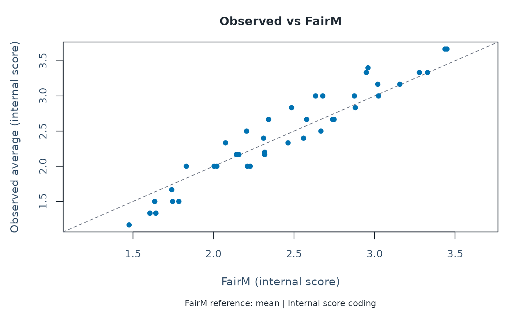
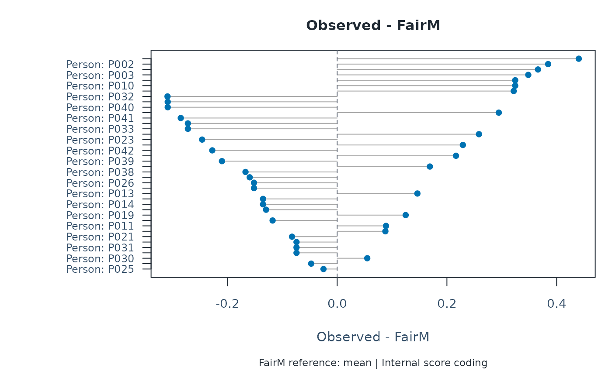

Plot fair-average diagnostics using base R
Usage
plot_fair_average(
x,
diagnostics = NULL,
facet = NULL,
metric = c("AdjustedAverage", "StandardizedAdjustedAverage", "FairM", "FairZ"),
plot_type = c("difference", "scatter", "measure"),
top_n = 40,
show_ci = FALSE,
ci_level = 0.95,
draw = TRUE,
preset = c("standard", "publication", "compact", "monochrome"),
show_title = TRUE,
show_notes = TRUE,
...
)Arguments
- x
Output from
fit_mfrm()orfair_average_table().- diagnostics
Optional output from
diagnose_mfrm()whenxismfrm_fit.- facet
Optional facet name or names. Use
"Person"for ability-to-score relationships.- metric
Adjusted-score metric. Accepts legacy names (
"FairM","FairZ") and package-native names ("AdjustedAverage","StandardizedAdjustedAverage").- plot_type
"difference","scatter", or"measure"(Measure on x, fair score on y).- top_n
Maximum levels shown for
"difference"plot.- show_ci
Draw approximate fair-score intervals. RSM/PCM propagate only the focal measure SE, holding thresholds, other effects and reference means fixed. This is not full calibration uncertainty. GPCM uses available structural delta-method SEs, conditioning on person EAP/reference means; person rows are unavailable. Bounds are clipped to the internal rating range. Unavailable intervals are retained as NA with status and notes. The difference view treats the observed average as fixed: its whiskers are not confidence intervals for the observed-minus-fair gap. Returned
CI_EligibleisFALSE;CI_ReportingUsedistinguishes diagnostic-only and unavailable intervals, including stored bundles.- ci_level
Confidence level used when
show_ci = TRUE; default0.95. The returned plot-data object gainsCI_Lower,CI_Upper, andCI_Levelcolumns for downstream reuse.- draw
If
TRUE, draw with base graphics.- preset
Visual preset (
"standard","publication","compact", or"monochrome").- show_title
Show the figure title. The title remains in the return value.
- show_notes
Show short figure annotations. Full interpretation and uncertainty notes remain in
data$notesand the ggplotmfrmr_notesattribute.- ...
Additional arguments passed to
fair_average_table()whenxismfrm_fit.
Value
A plotting-data object of class mfrm_plot_data.
With draw = FALSE, the returned plot data includes title, subtitle,
legend, reference_lines, and the stacked fair-average data.
plot_data contains the displayed rows and coordinates; excluded retains
non-finite rows. notes explains the reference, uncertainty and row selection.
Details
FairM is an expected score at the mean measures of the other facets; for
non-person rows it also uses the mean estimated person measure. FairZ uses
zero reference measures instead. FairZ is not a z-score. The historical
alias StandardizedAdjustedAverage refers to the reference environment,
not z-standardization. Both metrics use fitted internal score coding.
PCM/GPCM use an element's own thresholds for the step facet and the mean
threshold profile for other facets. GPCM uses an element's own slope for
the slope facet and slope 1 otherwise. These are reporting conventions,
not averages of predictions over the observed person/assignment distribution.
plot_type = "measure" connects measures (person ability or facet effects)
to the reported fair score. Select facet = "Person" for an ability-to-score
view. Points reuse the table values, without fitting a trend across different
reference profiles. This transformation is not independent validation of
the fitted model. umean/uscale change Measure units, not score units;
xtreme changes the reported Measure only and disables conditional intervals.
"difference" ranks absolute observed-minus-fair gaps; "scatter" compares
observed averages against fair scores with an identity line. These gaps
also reflect assignment and person mix and do not by themselves diagnose
leniency, severity or bias. Intervals are conditional approximations with
full-refit coverage unverified. RSM/PCM intervals require a fitted model;
a stored bundle alone lacks the calibration needed to calculate them.
GPCM bundle intervals honor ci_level; older bundles without rating limits
can only reuse intervals at their recorded confidence level.
Further guidance
For a plot-selection guide and a longer walkthrough, see
mfrmr_visual_diagnostics and
vignette("mfrmr-visual-diagnostics", package = "mfrmr").
Examples
# \donttest{
# Load the package and example ratings
library(mfrmr)
toy <- load_mfrmr_data("example_operational")
# Fit the model
fit <- fit_mfrm(
data = toy,
person = "Person",
facets = c("Rater", "Criterion"),
score = "Score",
method = "MML",
model = "RSM"
)
# Compute diagnostics once for the following checks
diagnostics <- diagnose_mfrm(fit)
# How do the observed and reference-adjusted person averages compare?
plot_fair_average(fit, diagnostics = diagnostics, facet = "Person",
metric = "FairM", plot_type = "scatter")

# Optional: inspect the gap (observed average minus FairM)
plot_fair_average(fit, diagnostics = diagnostics, facet = "Person",
metric = "FairM", plot_type = "difference")

# A positive gap means the observed average is higher than the model-based FairM
# }